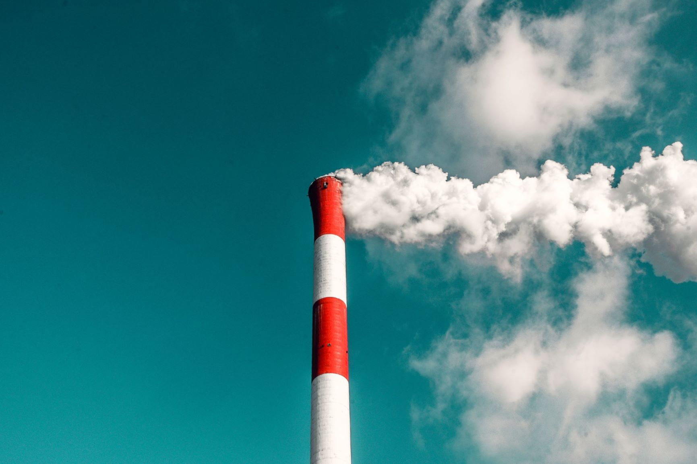
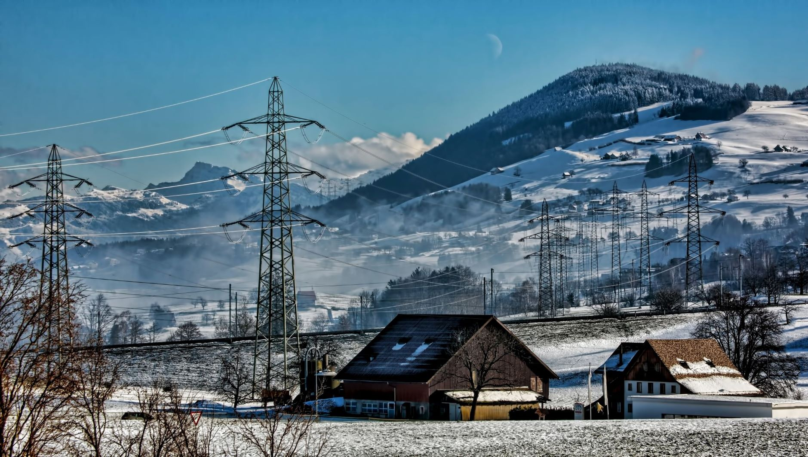
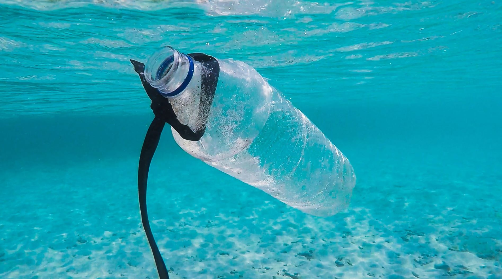
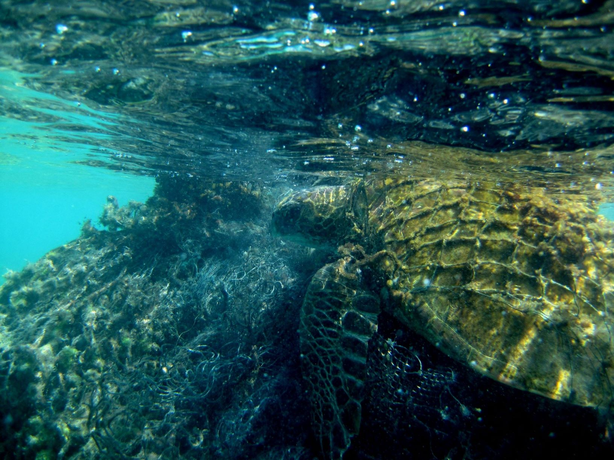
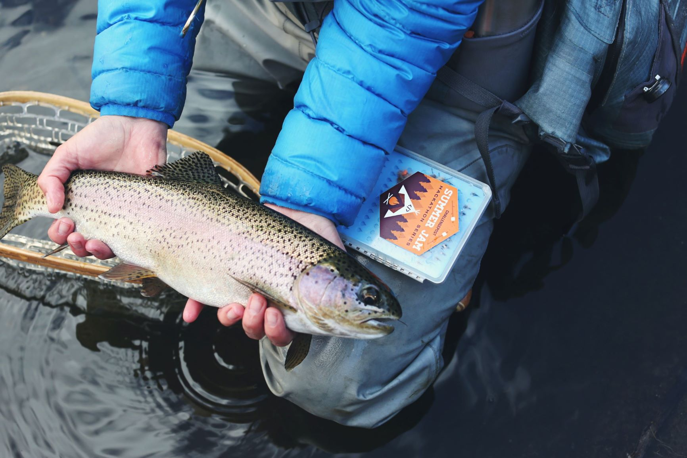

Defining problems | List
What is pollution?
1 October 2020
A walk-through of all types of pollution.
Introduction
If I say pollution you may have some very specific things in mind. You might think of C02, the Green House Effect, water contamination or deforestation. So, if we come to think of it, there are many forms of pollution. Let us try to grasp what pollution is, by categorizing its different variations.
I should note that the following list only contains causes of pollution. That is, effects such as deforestation, extinctions and a less varied biodiversity are not on this list. Perhaps we can delve into these effects in a later article.
Let us categorize the causes of pollution into 11 segments:
1. Air
Air pollution relates to harmful (often transparent) gasses filling the air. Air pollution is most often associated with the Greenhouse Effect, but it’s also a major health concern. The World Health Organization (WHO) estimates that 7 million people die of air pollution each year. In addition, WHO estimates that 9 in 10 people breathe air that exceeds the WHO guidelines. Sometimes air pollution becomes so excessive that entire cities are covered in smog. In those cases, air pollution can also increase risks on traffic accidents and reduce the quality of life: would you enjoy living in a ‘black city’, where all you see is chemical smog? I certainly would not!
Many people think of air pollution when they hear the word 'pollution'
2. Electromagnetic
This segment concerns radio frequencies and high concentrations of UV light. For instance, some people are concerned about living close to a telecom mast. The arrival of the 5G phone network has caused major concern among some people, and there were several cases of pyromancy. For instance, in the UK 77 masts were recently set on fire.

Electricity- and Telecom masts often cause public concern in communities
3. Light
Have you noticed that the night sky is way better when you’re away from the city? Light pollution relates to the light that man-made things emit. The emission of light in itself may also require harmful resources by itself. Electricity can be made by nuclear generation, combustion engines and ‘green energy’ methods.
4. Littering
Would you enjoy living in a city with filth everywhere? Some sorts of litter, like beer cans or chewing gum, can remain in the ground for many years before they are decomposed. Plastic products are particularly concerning for soil contamination and ocean wildlife. The ‘plastic soup’in the ocean has been caused by all that waste finding its way into the sea.
What do you reckon happens to a bottle like this?
While littering is not harmful to the planet per sé, I don’t think it’s enjoyable to walk in streets or swim in lakes that are full of garbage? In my opinion, the question of littering is ‘why don’t we make our world a better place, for each of us?’
‘why don’t we make our world a better place, for each of us?’
5. Noise
In 2019, there 327 Million visits to national parks. They come for holidays or the unique sights that the parks have to offer. The national park Service reports that they contribute 40 Billion dollars to the U.S. economy. What is not calculated, but I certainly want to note is that the parks may help American productivity numbers, as people can rest and spend holidays in them.
6. Plastic
We already discussed plastics in ‘literring’. What I can add is that plastics break down into tiny particles and may find their way into wildlife. To name one example, Greenland sharks are contaminated by an unusually high degree. In Season 9 Episode 2 of River Monsters, Jeremy Wade even finds a full piece of plastic in a Greenland shark’s stomache! Such solid pieces of plastic may also entangle birds, turtles and other sealife.
Sealife, such as turtles, can get entangled in pieces of plastic
7. Soil
When harmful chemicals enter the ground, we speak of soil pollution. Sometimes chemical dumps may find their way into the water. The film ‘Dark Waters’ from 2019 portrays this issue formidably.
8. Radioactivity
Levels of radioactivity are carefully measured in Western countries, and rarely exceed the official limit. However, when a nuclear disaster such as Fukushima occurs, the entire area will suffer from its effects for many years to come. Both people and animals may get all sorts of diseases and have a much lower life expectancy after they have been exposed to high levels of radioactivity.
9. Thermal
Levels of radioactivity are carefully measured in Western countries, and rarely exceed the official limit. However, when a nuclear disaster such as the one at Fukushima occurs, the entire area will suffer from its effects for many years to come. Both people and animals may get all sorts of diseases and have a much lower life expectancy after they have been exposed to high levels of radioactivity.
Thermal pollution puts fish like this trout at risk of thermal shock.
10. Water
Concerns any contaminant entering the ground water, river system, lake or ocean. It is important to remember that plankton (micropial animals living in oceans) are crucial for earth’s oxygen levels. If we are to mess with the ocean’s composition and biodiversity in a strong degree, we might negatively affect that fundamental process.
11. Positive Feedback Loops
The above ten causes of pollution bring about changes in the earth's natural dynamics. For instance, they could change the flow of oceanic currents and affect precipitation on local and regional levels. Scientists warn that high degrees of pollution may result in the emergence of 'positive feedback loops'. These are almost unstoppable, amalgamating dynamics that are caused by pollution but also cause more harm to the environment by themselves.
One major academic concern is that we could enter a global, unstoppable and highly destructive positive feedback loop which sets off a global mass extinction event.
Conclusion
The above list is an attempt to categorize the causes of pollution in 11 different segments. Hopefully it has conveyed how broad the term 'pollution' really is, and helped you understand what endangers the health of our earth's ecological health. If you have any suggestions with regard to this list, be sure to send us an e-mail.
But, if I were to summarize environmentalism in one sentence, I would like to present the wisdom my father once told me:
‘Environmentalism is to stop the world from becoming a garbage dump’
List of Sources
Here is a list of sources that were used for this article.
- The WHO on air pollution
- WHO's report on effects of air pollution
- News report of 77 masts being put on fire in the UK
- One of the many scientific studies on the effects of telecom- and electricity masts.
- On the contamination of the Greenland shark
- broader study on the contamination of the Greenland shark
- 'The Sixth Extinction', a book that helped spark the debate about the earth's sixth mass extinction event.
- report of entangeled sealife from 1997-2017
- The biggest threats to biodiversity
- Wikipedia's list of pollutants